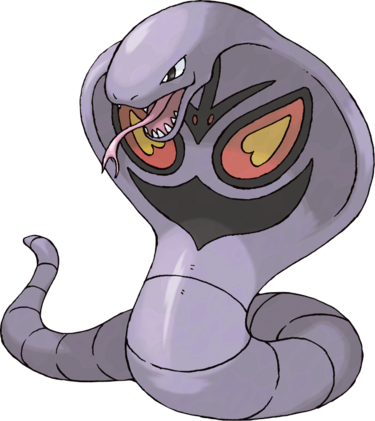

Arbok est capable d'écraser ses adversaires en enroulant son corps autour d'eux et en les pressant très fort. Il peut même aplatir des barils de pétrole. Quand il rencontre un ennemi, il lève la tête, l'effraie avec le motif de son capuchon et en faisant des bruits avec sa langue. Il est dit que n'importe quelle partie que l'on coupe du corps d'Arbok, à part la tête, repousse dans l'espace de quelques semaines. Il est également capable de ressentir les vibrations, comme montré dans le dessin animé. Arbok est capable de passer de longues périodes sous l'eau et de survivre dans les milieux aquatiques.